已判 0 / 14 条 · 判完了
弹窗标签推送系统 · 2026-10-16 · 第 4 份产出 · 判断题
第 4 份｜运营每天用「新建推播」页发推播，这一页够不够用？不设审批，靠页上的校验和确认能不能防住发错？
按下面 14 条标准逐条看 AI 评审的结论（每条只答「符合」或「不符合」），你只判同意或不同意；也可补标准里缺的条目。
不设审批是你 10/12 定的（改为发送前一页确认＋发给测试账号＋操作纪录），这里不再判要不要审批，只判这一页做得够不够。
01判断标准：6 条，按「日常发送 → 发前防错 → 发后止损」排
功能覆盖例行推播不重填
1每天、每周都要发的推播不用每次从头填：能从模板带入内容和发送设置、带入常用受众、设成每天或每周重复、复制旧推送再改
对应场景 每日补给、回流召回这类例行推播|出处 业内做法：Braze、OneSignal
我们原型对应的部分
新建推播 › 推送内容「从模板创建」、发送对象「常用受众」
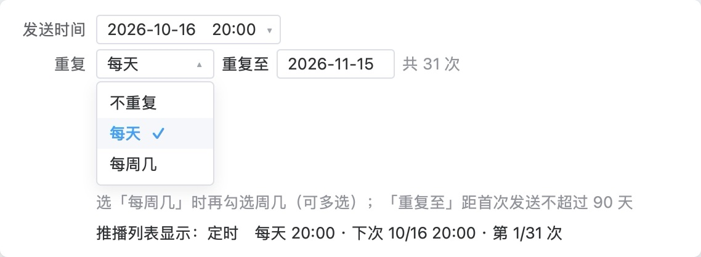
新建推播 › 发送时间「重复」选每天
模板带入内容、跳转、常用受众与发送设置，各字段仍可改；重复可选每天或每周几，「重复至」不超过 90 天，每期内容可设固定或每期更新；推播列表每行有「复制」。
AI 评审：是 模板下拉、常用受众、重复每天/每周几、列表「复制」四项齐全
你判：
状态与防错发前看清发给谁、多少人
2点「确认排程」前看得到这条会发给多少人：人数从群组逐层算到预计发出；发全部玩家时须再确认一次
防的错 选错群组、漏排除、误发全部玩家|出处 你定的：10/12「发送前一页确认（受众人数、各渠道预计条数、文案预览）」；业内做法：Braze
业内顶尖产品怎么做
- Braze：选受众时页脚显示各渠道预计可触达人数，可点「计算精确数字」；另有受众摘要 Braze 文档
- Braze：审批要在工作区设置里打开，默认关闭；审批与发送是两个权限 Braze 文档
我们原型对应的部分
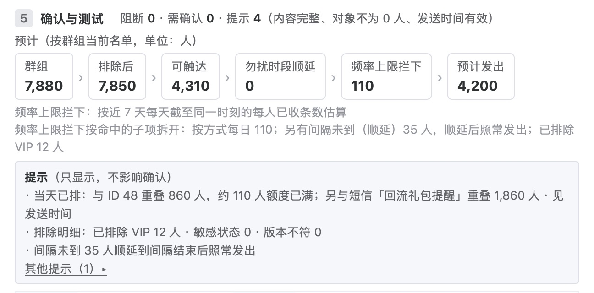
新建推播 › 确认与测试
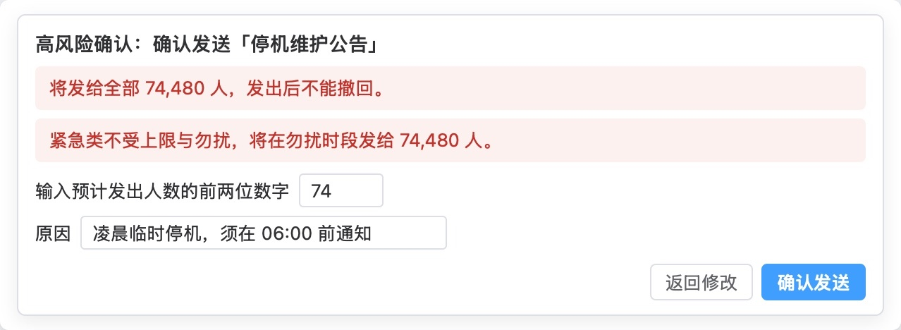
新建推播 › 点「确认排程」后的高风险确认框
高风险确认在发送对象为全部玩家、消息类别为紧急、短信预计费用或 LINE 预计用量超过门槛时弹出，须输入预计发出人数的前两位。
AI 评审：是 确认块群组至预计发出六层人数；全部玩家触发高风险确认输前两位
你判：
状态与防错发前在真机看效果
3正式发出前能先发给测试账号，在真机上看到实际效果，并按账号看到收没收到
防的错 文案错字、图片被裁切、跳转打不开|出处 你定的：10/12「发给测试账号」；业内做法：Braze、OneSignal、Firebase
我们原型对应的部分
新建推播 › 确认与测试 › 测试发送
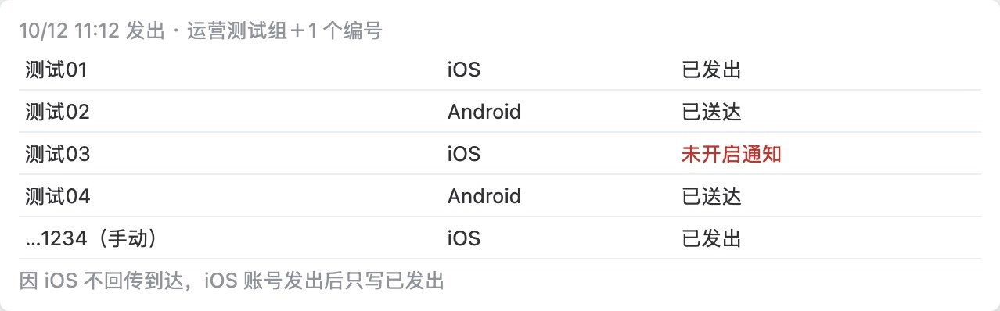
新建推播 › 测试结果
测试对象为「运营测试组」加手填会员编号，最多 10 个；测试不计入每人每天上限与数据。
AI 评审：是 测试发送选测试组加会员编号；结果按账号列，iOS只到已发出
你判：
状态与防错发前填错当场拦下
4常见填错在确认前被拦下：内容为空或超字数、发送时间不在有效范围、跳转目标到发送时还没上架、对象为 0 人时，「确认排程」都不可点
防的错 漏填、超长、时间填错、跳到未上架的活动|出处 你定的：10/12「不设审批，发送前一页确认」
我们原型对应的部分
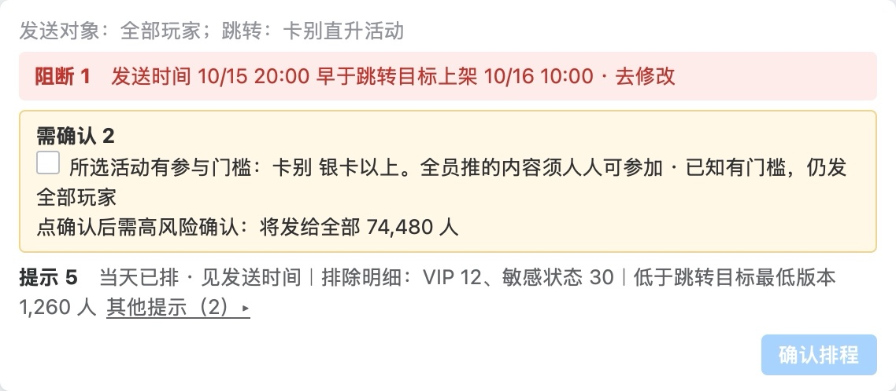
新建推播 › 确认与测试：阻断、需确认、提示三级
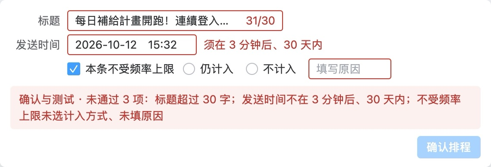
新建推播 › 多项未通过
阻断红字置顶，改好才能确认；需确认逐条勾选；提示只显示。出错字段标红，并逐项列在确认块。
AI 评审：是 超字数、时间越界、跳转未上架均置灰；空内容与0人见原文
你判：
状态与防错发后停下与更正
5排程后或发送中发现错了，能停下还没发出的部分，并只给已收到的人发一条更正
防的错 发出后才发现内容或对象错了|出处 你定的：需求清单「发送状态可查，可停止」（10/13 通过）；业内做法：Braze、OneSignal
我们原型对应的部分
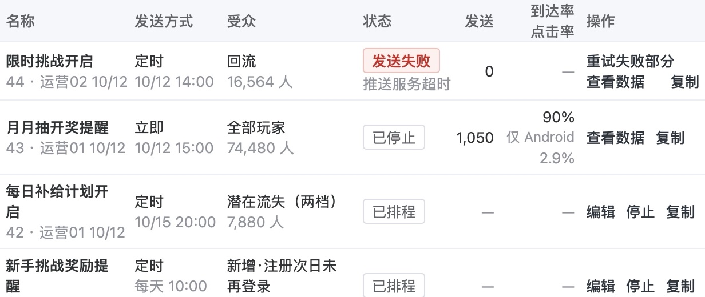
推播列表 › 行内操作
推播列表 › 点「停止」
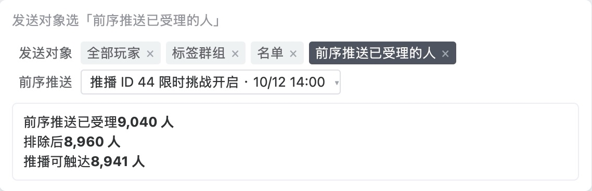
新建推播 › 发送对象选「前序推送已受理的人」
已排程、发送中的推播可在列表行内停止；更正通知只发给原收件人；总览另可一键暂停全部游戏外推送。
AI 评审：是 列表停止加停止确认框；对象可选前序推送已受理的人
你判：
状态与防错发后替换错的通知
6更正推播能替换玩家手机通知栏里那条错的，而不是再多出一条
防的错 错的那条仍留在通知栏，玩家同时看到两条说法不同的通知|出处 业内做法：Braze、OneSignal
业内顶尖产品怎么做
- Braze（Android）：推播可设「通知 ID」，之后发同一 ID 的推播即更新前一条 Braze 文档
- OneSignal：两条推播的 collapse_id 相同时，新的一条替换旧的；已送达的只有设了该 ID 才能替换（接口字段） OneSignal 文档
我们原型对应的部分
我们这里没有：更正推播是一条新通知，原来那条仍留在通知栏；新建推播表单与字段表都没有「替换前一条通知」的设置。
AI 评审：否 更正是新通知，缺替换前一条的设置（如通知ID/collapse_id）
你判：
业内做法都已打开官方文档核对。
02按评审维度补齐的标准：8 条
按评审维度表补齐其余维度；每条小标前半是所属维度。
信息结构与主次五块按填写先后，少用的收起
7新建推播页的五块（推送内容、发送对象、发送时间、频率上限、确认与测试）按运营填写的先后排，每块有标题，选填和少用的设置收起
看哪里 新建推播整页分块|出处 写作标准「先交代边界再讲内容」；业内做法：NN/g
业内顶尖产品怎么做
- NN/g 可用性启发式第 8 条「美观与极简」：界面不放无关或很少用到的信息；每多一个元素，都会和重要信息争夺注意力 NN/g 原文
我们原型对应的部分
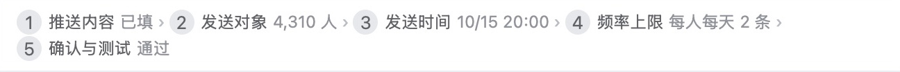
新建推播 › 页顶步骤条
新建推播 › 频率上限与高级设置（收起）
页顶步骤条列出五块及各块状态；五块各有带序号的标题，顺序同步骤条。收起的：高级设置（标题写「已设 1 项」，其余 12 项为默认值）、通知预览（折叠／展开）、群组组成（「展开查看」）、确认块「其他提示」。整页见下一条的图。
AI 评审：否 五块顺序和标题对，但选填的图片、营销档期和少用的「本条不受勿扰」未收起
你判：
视觉完成度八个检查点逐项看
8新建推播页按视觉完成度八个检查点逐项看，没有一项不符合；其中通知预览里是繁體真实文案，不是占位文字
看哪里 新建推播主图、通知预览、图下状态小图|出处 你定的：10/16 要判原型设计是否粗糙；原型要求「玩家看到的文案用繁體」；业内做法：NN/g、Ant Design
业内顶尖产品怎么做
- 1 对齐：同一块的标题、正文、表单项共用一个左侧起点；表单标签冒号对齐；数字取相同位数并右对齐。Ant Design「对齐」 Ant Design 文档
- 2 间距分级：组内、组与组、块与块的间距分三级，全页一致；关系越近间距越小（纵向 8／16／24px）。Ant Design「亲密性」 Ant Design 文档
- 3 字号与字重层级：页标题、块标题、字段名、正文、辅助说明各一级，同级同样式，一眼看得出主次和阅读顺序。NN/g 视觉设计原则「比例」「视觉层级」 NN/g 原文
- 4 对比：主操作与次要操作、必填与选填、可用与禁用在外观上区分得出。NN/g 视觉设计原则「对比」 NN/g 原文
- 5 组件一致：同一种控件全页同一样式和用法，并与现有后台（Element UI 风格）一致；同一操作同一个词。NN/g 启发式第 4 条「一致性与标准」、Ant Design「重复」 NN/g 原文 Ant Design 文档
- 6 颜色与装饰：一色一义、全页固定；没有不承载信息的边框、底色、图标。NN/g 启发式第 8 条「美观与极简」 NN/g 原文
- 7 示例数据：字段里是真实形态的示例值（真实活动名、合理人数与日期），前后一致；玩家看到的文案用繁體；没有「xxx」「示例文字」「123」这类占位。原型要求
- 8 基础排版：文字不截断、不溢出、不互相遮挡；折行在自然停顿处；并列几行前有符号，行间距大于行内。你 10/12：「这三行前面哪怕给打个点……这也太粗糙了吧」
我们原型对应的部分
- 1 对齐：各块字段名一列与输入框左边缘；确认块六格人数；摘要表两列
- 2 间距分级：块与块的分隔线、块内各行、通知预览两张卡片之间
- 3 字号层级：块标题（1 推送内容……5 确认与测试）、字段名、灰色说明小字
- 4 对比：底部「确认排程」与「存为模板」「存为草稿」「取消」；消息类别、发送时间的选中态；必填与「上传图片（选填）」
- 5 组件一致：下拉（▾）、单选（发送对象）、按钮组（立即／定时／按行为）、可删标签（VIP 名单 ×）
- 6 颜色与装饰：蓝色（选中、主按钮、链接）；预计人数框的边框；确认块提示框的灰底
- 7 示例数据：推送名称「每日补给计划开启」、群组 7,880 人到预计发出 4,200 人、2026-10-15 20:00；通知预览文案「每日補給計畫開跑」
- 8 基础排版：「当天已排」「高级设置」「勿扰时段」下的长说明折行；确认块「提示」三行；图下状态小图（高级设置展开、群组组成、测试结果）见第 2–5 条的图
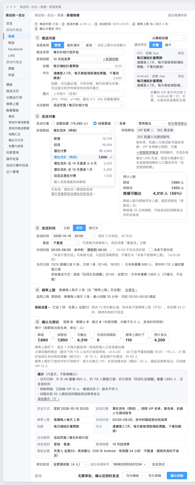
新建推播 › 整页（去掉编号标注）
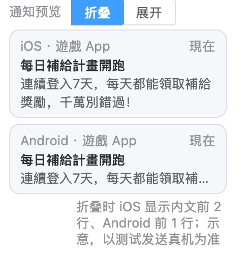
新建推播 › 通知预览
AI 评审：否 标题层级、必填标记、折叠控件样式、示例值、折行五个检查点不符
你判：
改动可辨新页面写明取代什么
9新建推播页页首写明是新页面，并写出现在推播在哪里建、迁入后哪个旧入口停用
看哪里 新建推播页页首说明|出处 写作标准「写清是现状还是改后」；原型要求
依据的标准怎么写
- 写作标准：写清是现状还是改后——现状句写「现在」，做法句用「新建、加、改为」或写「改后」；单用「可」「能」会被读成已经能做
- 原型要求：现有页面的改动标「新增」「改」；只看图和右侧说明，就说得出这页让运营做什么、和现状比改了什么
我们原型对应的部分
新建推播 › 页首
页首写「新页面」和标题一句。页首、主图与右侧说明都没有写现在推播在哪里建（现在只能在礼包后台配，只用于限时加码礼包未购买提醒），也没有写迁入后哪个旧入口停用。
AI 评审：否 页首只写「新页面」，没写现在推播在礼包后台建、迁入后停用哪个旧入口
你判：
方向一致不设审批
10新建推播页的发送流程不含审批或提交审核环节，防错只靠确认页、测试发送和操作纪录
看哪里 「确认与测试」块与底部按钮|出处 你定的：10/12「不设审批」
依据的标准怎么写
- 你定的（10/12）：使用者是运营。不设审批：发送前一页确认（受众人数、各渠道预计条数、文案预览）＋发给测试账号＋操作纪录
我们原型对应的部分
新建推播 › 底部按钮
底部按钮为「取消」「存为模板」「存为草稿」「确认排程」，旁写「无需审批，确认后到时发送」；页标题写「无需审批」；字段表「审批」一行写「不设审批，由确认前核对、测试发送和操作纪录代替审批」。命中全部玩家、紧急等条件时另弹高风险确认框（见第 2 条）；每次测试发送记入操作纪录。
AI 评审：是 按钮为「确认排程」并注明无需审批，防错靠确认块、高风险确认和测试发送
你判：
事实与依据限制值有出处
11新建推播页上的限制值（文案字数上限、可选发送时间范围、每人每天营销推播 2 条）都注明了出处（运营规范、推送服务商限制或已定事项）
看哪里 「推送内容」「发送时间」「频率上限」三块的说明|出处 写作标准「事实只写已证实的」「每处改动……写出推得出它的理由」
依据的标准怎么写
- 写作标准：事实只写已证实的，不猜；推断可以写，须写明依据和边界
- 写作标准：每处改动、每个目标或指标都写出推得出它的理由；门槛要说得出来源（数据分位或行业研究）
我们原型对应的部分
新建推播 › 推送内容：标题、内文
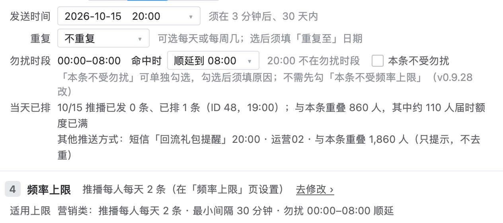
新建推播 › 发送时间、频率上限
页上的值：标题 8/30、内文 24/60（上限 30 字、60 字）；发送时间「须在 3 分钟后、30 天内」；频率上限「推播每人每天 2 条（在『频率上限』页设置）」「最小间隔 30 分钟」。页上只写值和设置位置；字段表同样只写值，没有写这些值来自运营规范、服务商限制还是已定事项。
AI 评审：否 字数上限、发送时间范围、每天 2 条上限都没注明出自哪项规范或已定事项
你判：
措辞与指代新名称当场说明
12新建推播页的字段名和按钮名沿用运营现有后台的叫法，新出现的名称（如「常用受众」「确认排程」）旁有一句说明
看哪里 各字段名、按钮名|出处 写作标准「后台功能名第一次出现说明它是什么」；你定的：新出现的名称当场写清它做什么
依据的标准怎么写
- 写作标准：人群、功能、指标第一次出现写出具体名称；后台功能名第一次出现说明它是什么；不用项目内部简称，也不用读者所在地区不常用的行话
- 你定的（10/9）：不用自造概念；新出现的名称当场写清它做什么
我们原型对应的部分
新建推播 › 消息类别
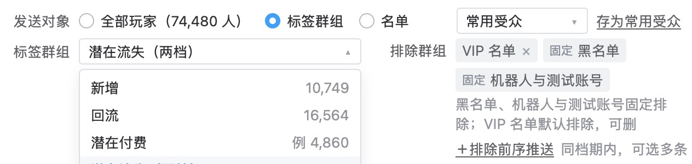
新建推播 › 发送对象
名称旁有说明的：「消息类别」旁写「决定上限与勿扰默认」；「＋排除前序推送」旁写「同档期内，可选多条」；标签群组下写「可多选，满足任一群组即发送」。名称旁没有说明的：「常用受众」「存为常用受众」「营销档期」「确认排程」；其中常用受众、营销档期的说明在右侧说明栏。字段表写发送对象、排除等字段旁有「?」悬停说明，主图上没有画出。现有推播在礼包后台配置，资料里没有那一页的截图，现有叫法无法逐项对照。
AI 评审：否 「常用受众」「营销档期」旁无说明，只在图外说明栏解释；现有叫法无从对照
你判：
无多余内容编号与说明栏只放该放的
13新建推播页的主图和说明栏没有成本、来源标注；图上编号标注只标不显而易见的交互，不超过 6 处
看哪里 主图编号与右侧说明栏|出处 写作标准「辅助标注不夹进核心内容」；原型要求「图上编号标注 3–6 处」
依据的标准怎么写
- 写作标准：辅助标注不夹进核心内容——成本、来源这类标注会分散读者看核心内容的注意力时，单开一节集中写
- 原型要求：图上编号标注 3–6 处，只标不显而易见的交互和规则；说明放在图右侧一栏，每条一行（粗体短语＋一句）
我们原型对应的部分
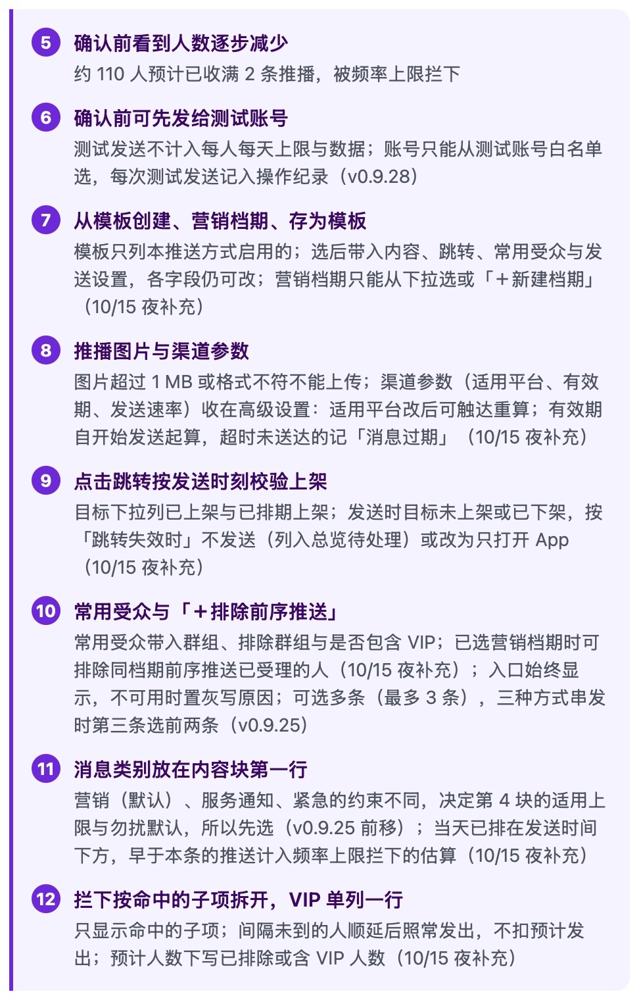
新建推播 › 右侧说明第 5–12 条
主图上紫色编号 11 处，另 1 处在「高级设置」展开的状态图里，共 12 处；右侧说明 12 条，每条一个粗体短语加一至三行说明。12 条中 8 条末尾带版本号或「10/15 夜补充」这类补充日期；主图「勿扰时段」下的说明也带版本号。主图与说明栏没有成本标签。
新建推播 › 原型页原样（上半）：主图紫色编号与右侧说明栏；点图看整页
AI 评审：否 主图编号标注 11 处，超过 6 处；说明栏 8 条带修订版本或补充日期标注
你判：
措辞与指代整页句式：开头与主语
14新建推播页的说明栏和页上文字，没有成片以同一主语（如「运营」）或同一句式开头的句子，上下文已确定的主语没有逐句写出
看哪里 新建推播整页与右侧说明栏|出处 你 10/15：「永远是运营在开头，这三个字真的有必要？」；措辞审查「整稿通读」
依据的标准怎么写
- 措辞审查「整稿通读」：逐句查完后通读全稿，同一开头、同一句式反复出现的删去或改写；全稿主体已经明确的不逐句写出，例如运营用的后台不写「运营在……」；补主语只补读者会读错或读不出的
- 你 10/15（当时原型改稿后有 63 处以「运营」开头）：「永远是运营在开头，这三个字真的有必要？真的认真检查措辞了吗？」
我们原型对应的部分
- 以「运营」开头的句子：没有；页上的「运营测试组」「运营02」是测试组名与账号名
- 说明栏 12 条的小标：先选标签群组，再选排除群组；预计人数逐层算到可触达；发送对象在开始发送那一刻锁定；低频项收进「高级设置」，默认收起；确认前看到人数逐步减少；确认前可先发给测试账号；从模板创建、营销档期、存为模板；推播图片与渠道参数；点击跳转按发送时刻校验上架；常用受众与「＋排除前序推送」；消息类别放在内容块第一行；拦下按命中的子项拆开，VIP 单列一行。第 5、6 条都以「确认前」开头
- 页上的说明句（原文）
「标题、内文都必填；只有空格、换行的视为未填；无法显示的字符保存时去掉并提示」
「黑名单、机器人与测试账号固定排除；VIP 名单默认排除，可删」
「群组每 25 分钟刷新，开始发送时按群组当时的名单发」
「可选每天或每周几；选后须填『重复至』日期」
「频率上限拦下：按近 7 天每天截至同一时刻的每人已收条数估算」
AI 评审：是 无「运营」开头；说明栏仅两条以「确认前」开头，页上说明句开头各异
你判：
业内做法取自 NN/g、Ant Design 官方页面，已打开核对。
03参考案例：你推翻过的两份同类稿
例 1 操作界面简陋
- 你的原话
- 「……目前只有数据看板和操作界面有一些简陋的内容」（10/14）
- 当时的稿
- 10/14 原型「新建推播」：五块与测试发送已有；没有模板、常用受众、重复发送、高风险确认、跳转上架校验、更正通知（下图）
- 改后
- 本题第 4 份：补了从模板创建与存为模板、常用受众、每天／每周重复、确认块三级提示、高风险确认框、跳转目标上架校验，发送对象加「名单」与「前序推送已受理的人」
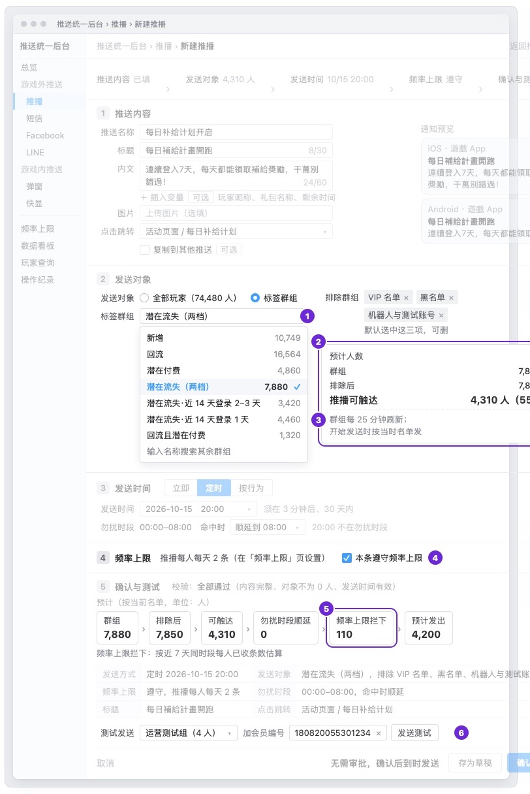
10/14 原型 · 新建推播（当时版本）
例 2 没想到出问题后要能回头查
- 你的原话
- 「对了，在版本更新后，仍需保留旧版本的弹窗数据。因为可能会出问题什么的」（10/14）
- 当时的稿
- 10/14 原型没有写改设置或游戏发版后，旧版本的弹窗数据怎么留
- 改后
- 弹窗规则改设置时存为新版本，每个版本的数据分开保留，改设置或游戏发版都不清除
04怎么判
直接在页面上点：每条下面点「同意」或「不同意」（不同意可写一句理由），页面最下面可补还缺的标准；点完自动保存，判完在对话里说一声「判完了」即可。
05还缺什么，判完没有
原文：原型 · 新建推播 原型 · 推播列表 字段表 请你判的 10 份产出